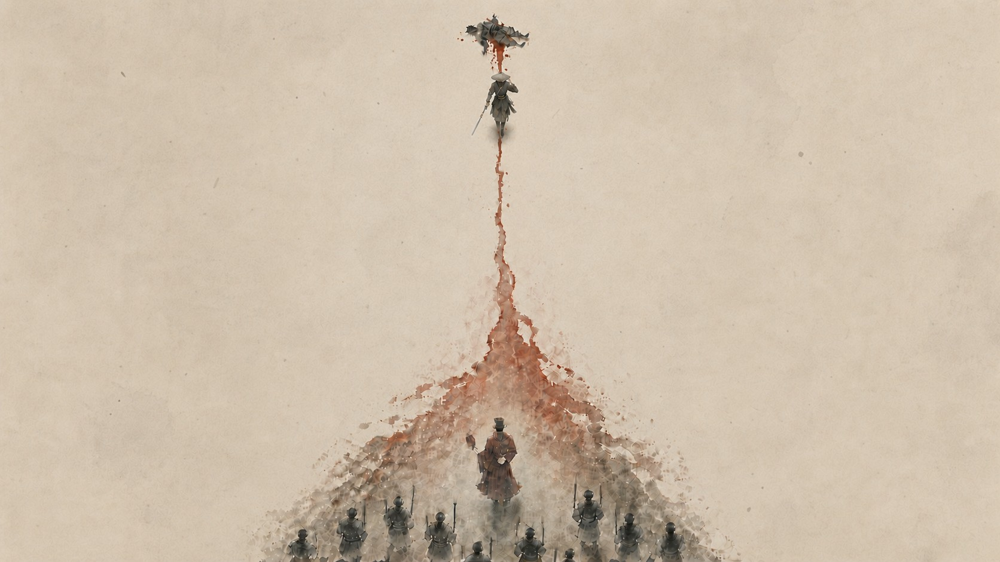
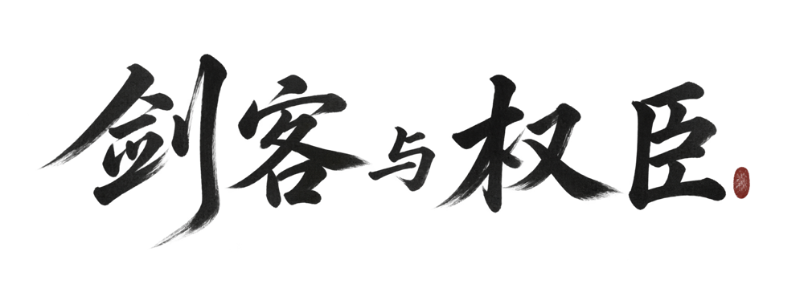

剑客与权臣
STRATEGY & SWORD
ABOUT // 关于这款游戏
一个强者，或一群帮手
在地图上寻找道路与线索。把有限的资源集中给自己，或者换成更多帮手，是旅途中最重要的选择。
《剑客与权臣》是一款水墨风武侠 RPG。探索方式受到《废都物语》的启发：你会在地图中查看地点、触发事件、与人交谈，并一点点发现新的去处。如果选择亲自战斗，则通过类似《水果忍者》的滑动操作直接挥刀斩击。
但成为剑客并不是必选项。你可以把资源集中在自己身上，慢慢养成一个能独当一面的强大战力；也可以用这些资源招募更多打手，让人数弥补单人的不足。一个强者或一群帮手，都是简单直接的成长路线。
这是一个由我独立制作、仍在慢慢完善的项目。目前雨天氛围与战斗中的血迹表现相对完整，其他内容也会随着开发继续调整。
「是把自己练得更强，还是再多找几个人？」
- GENRE
- 水墨风武侠 RPG
- EXPLORE
- 地图交互：查看地点、触发事件、与人交谈
- COMBAT
- 滑动操作，直接挥刀斩击
- GROWTH
- 强化自身 / 招募打手
- STATUS
- 开发中 · 暂无公开试玩
OPERATOR // 剑客系头巾、看不清面目的剑客。要不要亲自出刀，由你决定。
GALLERY // 画面
雨与血
SCN-01
SCN-02
SCN-03
SCN-04
FEATURES // 你会经历什么
江湖路线
-
EXPLORE
在地图中探索
查看地点、触发事件、寻找线索。通过简洁的地图交互，一步步打开村庄与村外的道路。
-
SWORD
想出刀，就亲自出刀
选择成为剑客后，不需要记复杂的招式表。看准敌人，用滑动操作挥刀斩击，直接感受命中与血迹反馈。
-
RECRUIT
不想出刀，就多带几个人
同样的资源也可以拿去招募打手。单个人不够强，就靠人数补上；你不必亲自成为那个最能打的人。
-
ATMOSPHERE
在雨与血中赶路
雨天改变村庄和野外的气氛，血迹记录刚刚发生的战斗。这两部分也是目前美术表现较完整的内容。
开发中版本 · 暂无公开试玩 · 页面内容与截图均为开发中版本